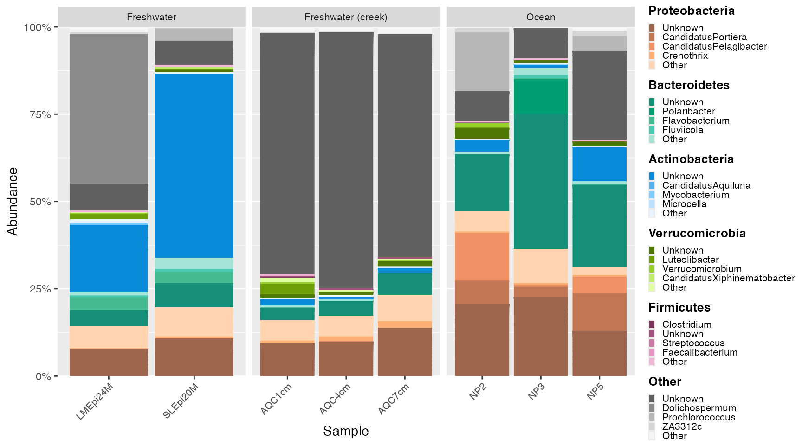
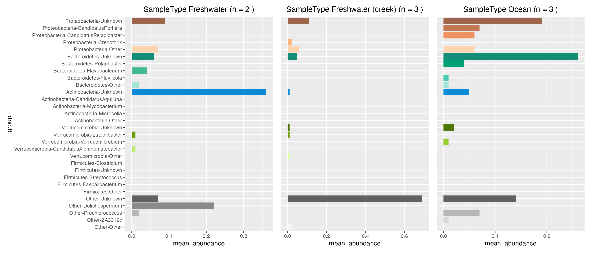
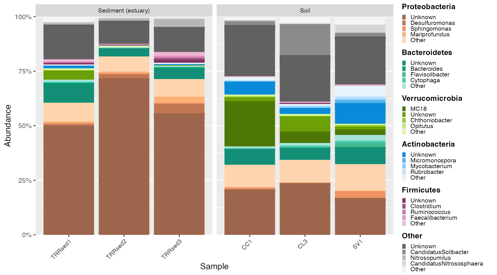
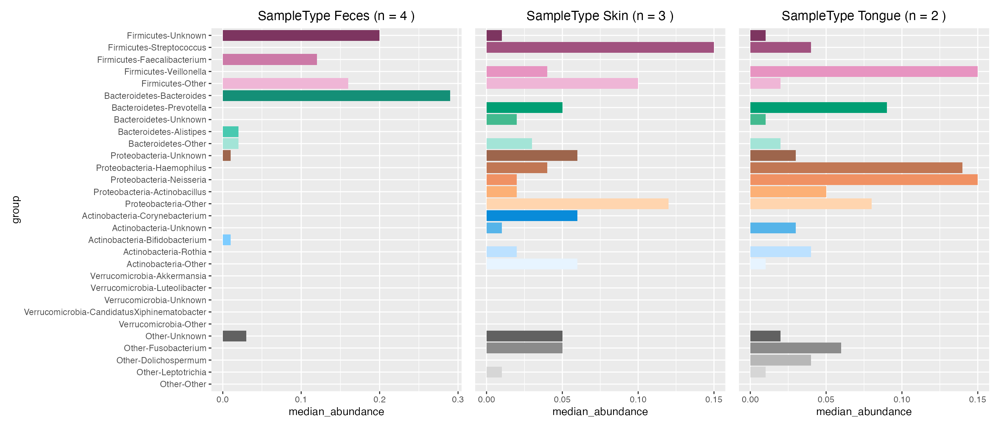

Global Patterns Data Vignette
This vignette explores the Global Patterns microbiome data available from phyloseq, which includes water samples, land samples, and human samples.
Learn more about the phyloseq package here.
Use the microshades functions
# The dataset Global Patterns is a phyloseq object avalible from the Phyloseq package
data(GlobalPatterns)
# Agglomerate and normalize the phyloseq object, and melt to a data frame
mdf_prep <- prep_mdf(GlobalPatterns)
# Generate a color object for the specified data
color_objs_GP <- create_color_dfs(mdf_prep,selected_groups = c("Verrucomicrobia", "Proteobacteria", "Actinobacteria", "Bacteroidetes",
"Firmicutes") , cvd = TRUE)
# Extract
mdf_GP <- color_objs_GP$mdf
cdf_GP <- color_objs_GP$cdfPlot
Use mdf_GP as the object to plot and use cdf_GP to assign the correct color assignments.
# Plot
plot <- plot_microshades(mdf_GP, cdf_GP)
plot_1 <- plot + scale_y_continuous(labels = scales::percent, expand = expansion(0)) +
theme(legend.key.size = unit(0.2, "cm"), text=element_text(size=10)) +
theme(axis.text.x = element_text(size= 6))
plot_1 
The plot_microshades returns a ggplot object, that allows for additional specifications for the plot to be declared. For example, this allows users to facet samples and more descriptive elements.
plot_2 <- plot + scale_y_continuous(labels = scales::percent, expand = expansion(0)) +
theme(legend.key.size = unit(0.2, "cm"), text=element_text(size=10)) +
theme(axis.text.x = element_text(size= 6)) +
facet_wrap(~SampleType, scales = "free_x", nrow = 2) +
theme (strip.text.x = element_text(size = 6))
plot_2
Plot with custom legend
To Ensure that all elements of the custom legend are visible, adjust the legend_key_size and legend_text_size. Additionaly, the fig.height and fig.width may need to be declared.
GP_legend <-custom_legend(mdf_GP, cdf_GP)
plot_diff <- plot + scale_y_continuous(labels = scales::percent, expand = expansion(0)) +
theme(legend.position = "none") +
theme(axis.text.x = element_text(size= 6)) +
facet_wrap(~SampleType, scales = "free_x", nrow = 2) +
theme(axis.text.x = element_text(size= 6)) +
theme(plot.margin = margin(6,20,6,6))
plot_grid(plot_diff, GP_legend, rel_widths = c(1, .25))
Plot with extended Proteobacteria colors
new_groups <- extend_group(mdf_GP, cdf_GP, "Phylum", "Genus", "Proteobacteria", existing_palette = "micro_cvd_orange", new_palette = "micro_orange", n_add = 5)## Joining, by = c("Top_Phylum", "Top_Genus", "group", "hex")
## Joining, by = c("Top_Phylum", "Top_Genus", "group", "hex")
GP_legend_new <-custom_legend(new_groups$mdf, new_groups$cdf)
plot_diff <- plot_microshades(new_groups$mdf, new_groups$cdf) +
scale_y_continuous(labels = scales::percent, expand = expansion(0)) +
theme(legend.position = "none") +
theme(axis.text.x = element_text(size= 6)) +
facet_wrap(~SampleType, scales = "free_x", nrow = 2) +
theme(axis.text.x = element_text(size= 6)) +
theme(plot.margin = margin(6,20,6,6))
plot_grid(plot_diff, GP_legend_new, rel_widths = c(1, .25))Re-examine data with smaller groups
# Subset Global Patterns to smaller groups in the dataset
ps_water <- subset_samples(GlobalPatterns, SampleType %in% c("Freshwater", "Freshwater (creek)", "Ocean"))
ps_land <- subset_samples(GlobalPatterns, SampleType %in% c("Soil", "Sediment (estuary)"))
ps_human <- subset_samples(GlobalPatterns, SampleType %in% c("Skin", "Feces", "Tongue"))
# Agglomerate and normalize the phyloseq objects, and melt to a data frame
mdf_water <- prep_mdf(ps_water)
mdf_land <- prep_mdf(ps_land)
mdf_human <- prep_mdf(ps_human)
# Generate a color object for the specified data
color_objs_water <- create_color_dfs(mdf_water,selected_groups = c("Verrucomicrobia", "Proteobacteria", "Actinobacteria", "Bacteroidetes",
"Firmicutes") , cvd = TRUE)
color_objs_water <- reorder_samples_by(color_objs_water$mdf, color_objs_water$cdf)
color_objs_land <- create_color_dfs(mdf_land,selected_groups = c("Verrucomicrobia", "Proteobacteria", "Actinobacteria", "Bacteroidetes",
"Firmicutes") , cvd = TRUE)
color_objs_land <- reorder_samples_by(color_objs_land$mdf, color_objs_land$cdf)
color_objs_human <- create_color_dfs(mdf_human,selected_groups = c("Verrucomicrobia", "Proteobacteria", "Actinobacteria", "Bacteroidetes",
"Firmicutes") , cvd = TRUE)
color_objs_human <- reorder_samples_by(color_objs_human$mdf, color_objs_human$cdf)
# Extract
mdf_water <- color_objs_water$mdf
cdf_water <- color_objs_water$cdf
mdf_land <- color_objs_land$mdf
cdf_land <- color_objs_land$cdf
mdf_human <- color_objs_human$mdf
cdf_human <- color_objs_human$cdfWater Samples
water_legend <-custom_legend(mdf_water, cdf_water)
water_plot <- plot_microshades(mdf_water, cdf_water) +
scale_y_continuous(labels = scales::percent, expand = expansion(0)) +
theme(legend.position = "none") +
theme(axis.text.x = element_text(size= 8)) +
facet_wrap(~SampleType, scales = "free_x") +
theme (strip.text.x = element_text(size = 8))
plot_grid(water_plot, water_legend, rel_widths = c(1, .25))
Plot contributions
freshwater_contribution <- plot_contributions(mdf_water, cdf_water, "SampleType", "Freshwater")## Adding missing grouping variables: `Sample`
creek_contribution <- plot_contributions(mdf_water, cdf_water, "SampleType", "Freshwater (creek)")## Adding missing grouping variables: `Sample`
ocean_contribution <- plot_contributions(mdf_water, cdf_water, "SampleType", "Ocean")## Adding missing grouping variables: `Sample`
freshwater_contribution$box +
creek_contribution$box + theme(axis.title.y=element_blank(), axis.text.y= element_blank(), axis.ticks.y=element_blank()) +
ocean_contribution$box + theme(axis.title.y=element_blank(), axis.text.y= element_blank(), axis.ticks.y=element_blank())
freshwater_contribution$mean +
creek_contribution$mean + theme(axis.title.y=element_blank(), axis.text.y= element_blank(), axis.ticks.y=element_blank()) +
ocean_contribution$mean + theme(axis.title.y=element_blank(), axis.text.y= element_blank(), axis.ticks.y=element_blank())
freshwater_contribution$median +
creek_contribution$median + theme(axis.title.y=element_blank(), axis.text.y= element_blank(), axis.ticks.y=element_blank()) +
ocean_contribution$median + theme(axis.title.y=element_blank(), axis.text.y= element_blank(), axis.ticks.y=element_blank())Land samples
land_legend <-custom_legend(mdf_land, cdf_land)
land_plot <- plot_microshades(mdf_land, cdf_land) +
scale_y_continuous(labels = scales::percent, expand = expansion(0)) +
theme(legend.position = "none") +
theme(axis.text.x = element_text(size= 8)) +
facet_wrap(~SampleType, scales = "free_x") +
theme (strip.text.x = element_text(size = 8))
plot_grid(land_plot, land_legend, rel_widths = c(1, .25))
Plot contributions
sediment_contribution <- plot_contributions(mdf_land, cdf_land, "SampleType", "Sediment (estuary)")## Adding missing grouping variables: `Sample`
soil_contribution <- plot_contributions(mdf_land, cdf_land, "SampleType", "Soil")## Adding missing grouping variables: `Sample`
sediment_contribution$box +
soil_contribution$box + theme(axis.title.y=element_blank(), axis.text.y= element_blank(), axis.ticks.y=element_blank()) 
sediment_contribution$mean +
soil_contribution$mean + theme(axis.title.y=element_blank(), axis.text.y= element_blank(), axis.ticks.y=element_blank()) 
sediment_contribution$median +
soil_contribution$median + theme(axis.title.y=element_blank(), axis.text.y= element_blank(), axis.ticks.y=element_blank()) 
Human Samples
human_legend <-custom_legend(mdf_human, cdf_human)
human_plot <- plot_microshades(mdf_human, cdf_human) +
scale_y_continuous(labels = scales::percent, expand = expansion(0)) +
theme(legend.position = "none") +
theme(axis.text.x = element_text(size= 8)) +
facet_wrap(~SampleType, scales = "free_x") +
theme (strip.text.x = element_text(size = 8))
plot_grid(human_plot, human_legend, rel_widths = c(1, .25))Plot contributions
feces_contribution <- plot_contributions(mdf_human, cdf_human, "SampleType", "Feces")## Adding missing grouping variables: `Sample`
skin_contribution <- plot_contributions(mdf_human, cdf_human, "SampleType", "Skin")## Adding missing grouping variables: `Sample`
tongue_contribution <- plot_contributions(mdf_human, cdf_human, "SampleType", "Tongue")## Adding missing grouping variables: `Sample`
feces_contribution$box +
skin_contribution$box + theme(axis.title.y=element_blank(), axis.text.y= element_blank(), axis.ticks.y=element_blank()) +
tongue_contribution$box + theme(axis.title.y=element_blank(), axis.text.y= element_blank(), axis.ticks.y=element_blank())
feces_contribution$mean +
skin_contribution$mean + theme(axis.title.y=element_blank(), axis.text.y= element_blank(), axis.ticks.y=element_blank()) +
tongue_contribution$mean + theme(axis.title.y=element_blank(), axis.text.y= element_blank(), axis.ticks.y=element_blank())
feces_contribution$median +
skin_contribution$median + theme(axis.title.y=element_blank(), axis.text.y= element_blank(), axis.ticks.y=element_blank()) +
tongue_contribution$median + theme(axis.title.y=element_blank(), axis.text.y= element_blank(), axis.ticks.y=element_blank())